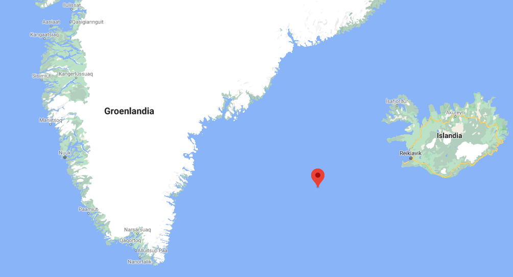
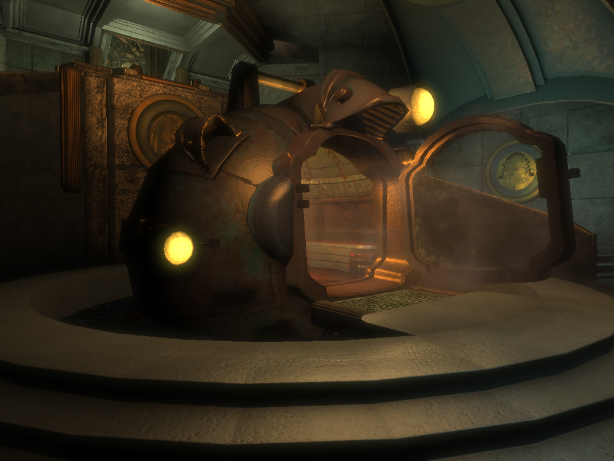
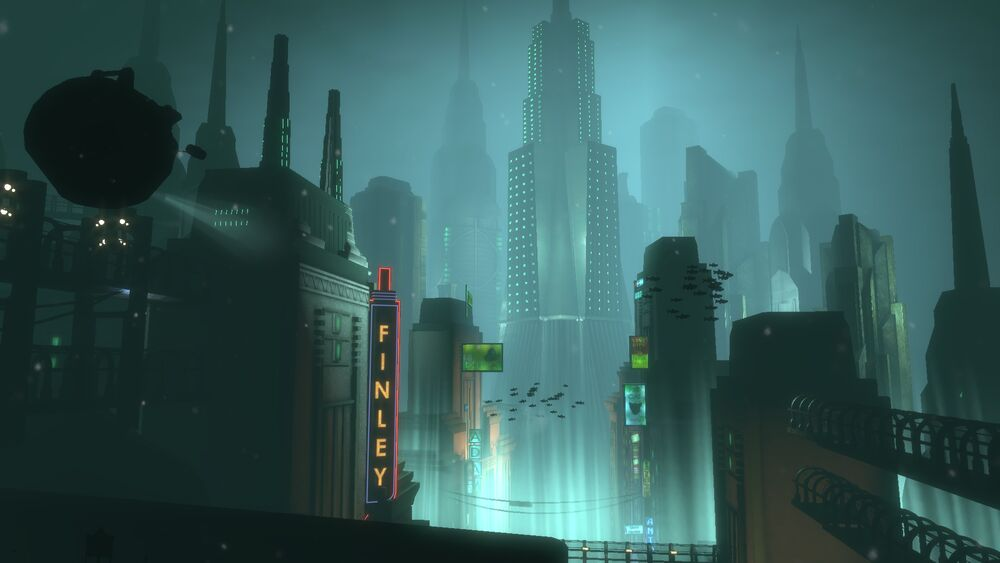
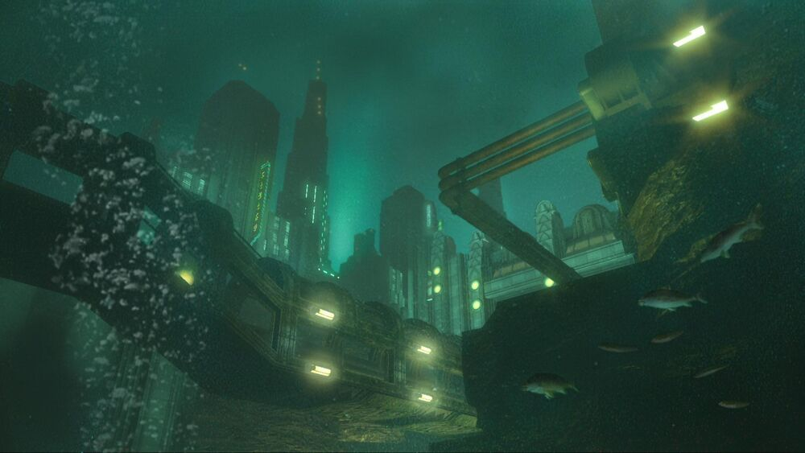
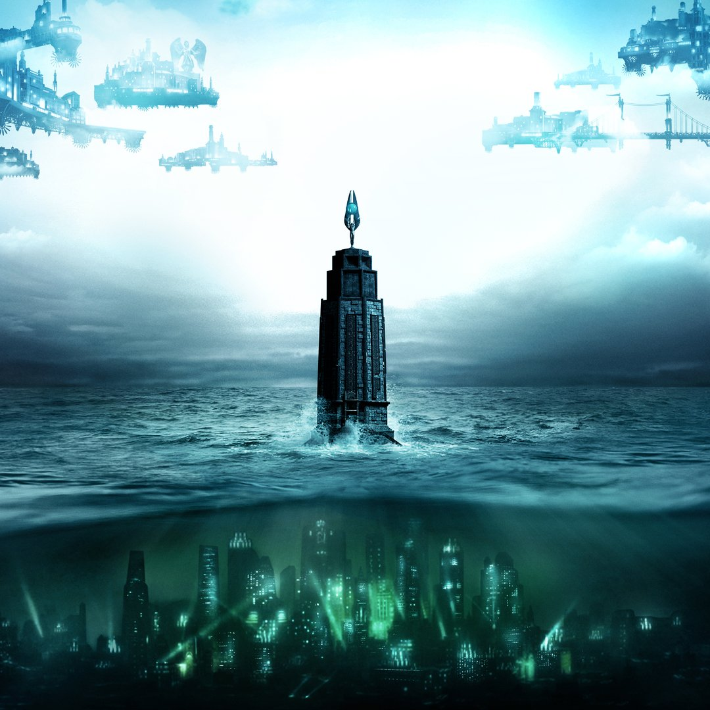

¿Qué es Rapture?
Rapture (también conocida como El Proyecto del Atlántico Norte) es una enorme ciudad submarina ideada y creada a partir de los sueños personales de Andrew Ryan .
Ubicada en las coordenadas 63° 2' Norte, 29° 55' Oeste, aproximadamente a 433 kilómetros al oeste de Reykjavik, la capital de Islandia.

Rapture está situada en el fondo del Océano Atlántico del Norte. Es una reluciente metrópolis de edificios de estilo art decó conectados entre sí por redes de túneles suspendidos de cristal, sistemas de batisfera y tranvías sumergidos, "Expreso Atlántico".

La ciudad se asemeja al distrito de Manhattan de Nueva York, tanto en cuestiones de tamaño como de apariencia general. Rapture es completamente autosuficiente, y toda su electricidad, comida, agua y sistemas de purificación de aire y defensa son motorizados por conductos volcánicos.


La ciudad se compone de muchos "rascacielos", interconectados por caminos y túneles, con puertas impermeables entre secciones vecinas para aislar las áreas del resto de la ciudad en caso de que alguna vez se inunden.
Además de las viviendas, Rapture cuenta con áreas comerciales, lugares de entretenimiento, laboratorios, plantas de fabricación, instalaciones médicas y otros servicios comunes proporcionados por una ciudad funcional.

La metrópolis está intencionalmente aislada del mundo, y el único acceso hacia el exterior son las batisferas que llevan a un faro situado en una isla a nivel del mar.
